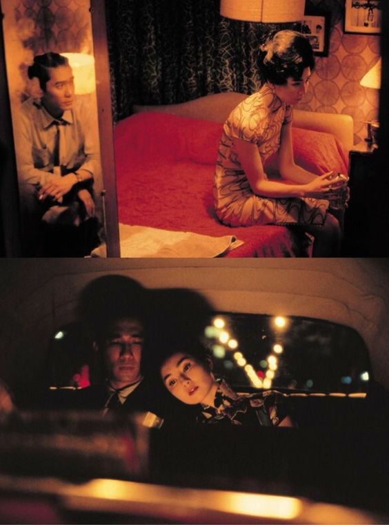

AESTHETICS
Wong Kar-wai's aesthetic style is characterized by its poetic and atmospheric qualities. His films often feature rich, vibrant visuals and a keen attention to detail, creating a dreamlike and immersive viewing experience. Wong's use of slow-motion, vivid color palettes, and evocative soundtracks contribute to his unique and emotionally resonant storytelling. His signature approach to portraying love, loneliness, and longing has made him a master of capturing the human experience on screen.
